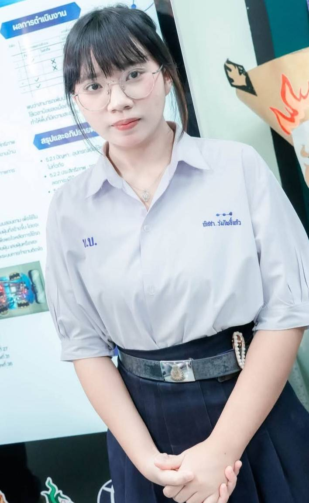

ชื่อ-นามสกุล:นางสาวณิชชา ร่มโพธิ์แก้ว
ชื่อเล่น:โมจิ
ระดับการศึกษา: ปัจจุบันกำลังศึกษาอยู่ชั้นมัธยมศึกษาปีที่ 6
โรงเรียน: โรงเรียนบ้านบึง"อุตสาหกรรมนุเคราะห์"
ความสนใจ: ดิฉันมีความสนใจด้านเครื่องกล เพราะชอบเรียนรู้เกี่ยวกับการทำงานของเครื่องจักรและกลไกต่าง ๆ รวมถึงสนใจการลงมือปฏิบัติและการแก้ไขปัญหา อยากเรียนรู้ตั้งแต่พื้นฐานและพัฒนาทักษะของตัวเองให้มากขึ้น
เป้าหมาย: ต้องการศึกษาต่อด้านครุศาสตร์อุตสาหกรรม สาขาเครื่องกล เพื่อเรียนรู้ทั้งภาคทฤษฎีและการปฏิบัติจริง และนำความรู้ที่ได้รับไปต่อยอดในการทำงานในอนาคต พร้อมพัฒนาตัวเองให้มีทักษะและประสบการณ์มากขึ้น